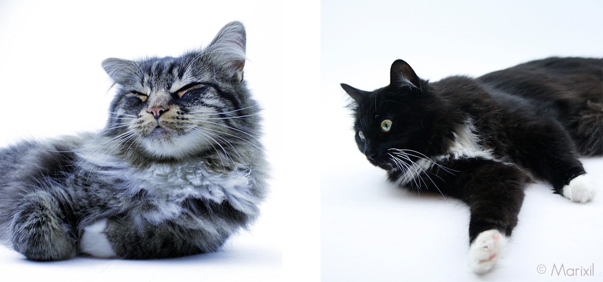

About Mao and Ruffy
Mao and Ruffy are siblings from the same litter and are just 4 years old.
They are also a mix of the cat breeds Main Coon and Siberian Forest.
The special thing about them is that they have the look and behaviour of a Main Coon and a Siberian, but they'll stay this small and don't grow any bigger like this breeds are normaly do. That's because, on the one side, their Dad is a Siberian and on the other side, their Mom is a Main Coon but also mixed with another unknown breed, probably the European Shorthair.
Ruffy and Mao
Characterisitcs of the mixed breed
The Main Coon and Siberian breed fit very well together.
Here are some Characterisitcs of this mixed breed:
- They have that super fluffy and semi long fur, which is sooo soft.
- The face shape is an inbetween of the Main Coons long snout and more square head and of the shorter snout and round head of the siberian.
- Though they like affection and playtime they'll also need their freedom sometimes.
- This breed also has an adventurous spirit and is naturally very curious.
- And least, they are just super cute. Just look at their eyes ^-^
Click here if you want to know more about those two breeds:
Learn more about the Main Coon!Learn more about the Siberian Forest Cat!
Maine Coon vs Siberian
Individual facts about Mao and Ruffy
- Maos original name is Le Mao which is just a funny reference to lmao
- Ruffys Name is related to the One Piece character Monkey D. Ruffy, because both eat a lot!
- Mao likes to chill and watch the world around him.
- Different from Mao, Ruffy is more active and likes to run and climb, he even aportes toys.